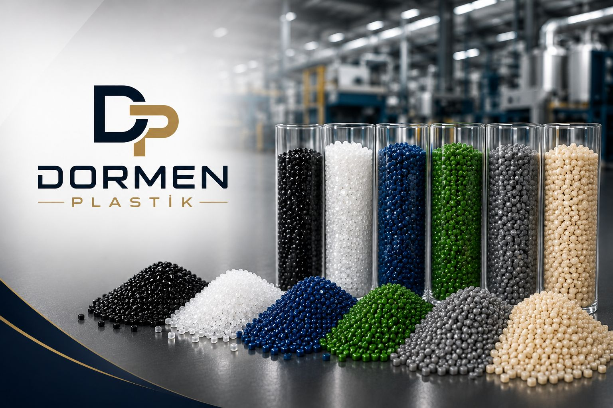

Dormen Plastik — Üretim Devam Eder
Dormen Plastik, 2014 yılından bu yana plastik geri dönüşüm sektöründe faaliyet gösteren, geri dönüştürülmüş LDPE granül üretimine odaklanmış bir sanayi kuruluşudur.
Modern üretim altyapımız, deneyimli ekibimiz ve yüksek üretim kapasitemizle müşterilerimizin ihtiyaçlarına uygun, istikrarlı ve güvenilir hammadde tedariği sağlamayı hedefliyoruz. Üretimin gücü, hammaddenin kalitesiyle başlar ilkesiyle hareket ederek; kontrollü proses ve güvenilir tedarik anlayışıyla hizmet veriyoruz.

Geri dönüştürülmüş LDPE granül üretiminde yüksek kapasite, istikrarlı kalite ve sürdürülebilir tedarik garantisi sunuyoruz.
Plastik atıkların yeniden üretime kazandırılması yalnızca ekonomik değil, çevresel açıdan da son derece önemli bir değerdir.
Dormen Plastik olarak kullanılabilir plastik atıkları yeniden işleyerek sanayinin hammadde ihtiyacına kazandırıyor; kaynakların daha verimli kullanıldığı döngüsel bir üretim modeline doğrudan katkı sağlıyoruz. Üretimin her aşamasında kalite sürekliliğini ön planda tutarken, sürdürülebilir üretime destek veriyoruz.